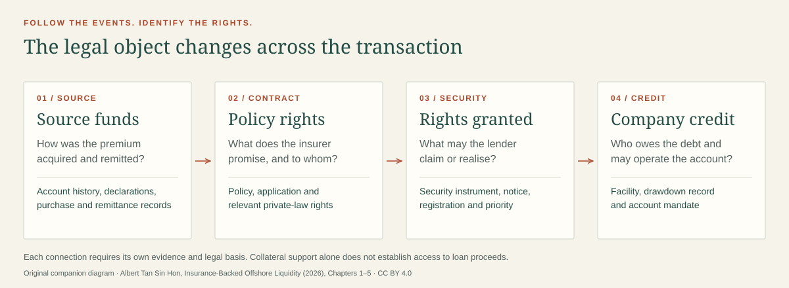

The method
Start with the preface, introduction and Chapter 1. Learn to keep rights, value and information distinct.
Chapter 1, printed p. 29ALBERT TAN SIN HON · UNIVERSITY OF GRONINGEN PRESS · 2026
Financial Law, Trust Governance and Regulatory Visibility at the PRC–Hong Kong Interface
A premium becomes a policy. A policy supports credit. A trust changes who may decide. Follow the transaction, identify the rights and test every legal connection.
Published 6 November 2026. Legal cut-off: 1 August 2026.
Advanced postgraduate and specialist reading, with guided entry points.
08 seminar plans
32 explained questions
02 evidence games
01 open-access book
READ WITH A PURPOSE
Start with the preface, introduction and Chapter 1. Learn to keep rights, value and information distinct.
Chapter 1, printed p. 29Follow eight seminars through origin, policy rights, governance, visibility and the final opinion.
Choose a seminarSearch the companion guides, then check the chapter and its primary authorities for your own question.
Search the guides
Search covers companion guides, goals and exercises, not the full book.
A READY-TO-USE SEMINAR SERIES
Each 90-minute lesson includes reading, learning goals, a fictional problem, facilitator commentary and an exit task. Use a single lesson or the full sequence.
A 16-slide presentation with source references and speaker notes. Open in your browser or print to PDF.
FORMATIVE PRACTICE
Choose the best answer on the stated facts. Feedback explains the distinction and sends you back to the source. Scores are practice feedback, not professional certification.
TWO GAMES ABOUT EVIDENCE
Six short files ask you to identify the next justified inquiry. Choose a case, examine its evidence and explain what remains unproved.
THE THREE-RECORD CHALLENGE
Sort nine tasks by their immediate purpose: legal position, value movement or institutional information. The same document can serve several inquiries; classify the specific task described.
MAKE THE BOOK USEFUL TO SOMEONE ELSE
Download the browser activities, lesson plans, slides, citation files and agent source code. Most activities work offline.
Download the complete kitThe publisher’s identifiers, access link, licence and scope are collected in a short adoption packet, with importable citations.
Open the library packetUse static JSON and Markdown, or run the local read-only MCP server. No account, API key or model subscription is required by this companion.
Integration instructionsAlbert Tan Sin Hon, Insurance-Backed Offshore Liquidity: Financial Law, Trust Governance and Regulatory Visibility at the PRC-Hong Kong Interface (University of Groningen Press 2026), doi:10.21827/6ac3948159a9e.
Book: CC BY-NC-ND 4.0. Original companion teaching material: CC BY 4.0. Companion code: MIT. Scope and attribution.
This is a separate, AI-assisted teaching supplement commissioned by the author, not a publisher-reviewed edition or legal advice. References describe the book’s position at its legal cut-off. Check current primary sources before applying law to a real matter.
Download the three-record diagram · Download the book sharing card